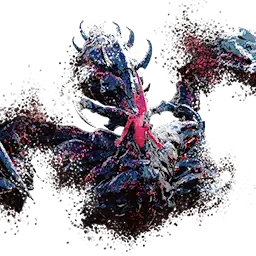

Ultimate Berk
Final boss ▶ 1:12
wipe Hide behind the rocks ▶ 1:15
The boss flies to the middle and four rocks appear at the edges. While he casts, everyone hides behind a rock — the green area behind each one is safe. Anyone left in the open is one-shot. Watch his cast bar.
Bleeding spin ▶ 1:33
After a pizza-slice hit, bright sparks flash around him and he spins after one player, adding bleeding. Stay out of his path; new players can burn a dodge, a potion or an invulnerability here.
wipe Stagger bar ▶ 2:03
When he raises his claws a stagger bar appears — break it fast or the group dies. Save your stagger skills for this moment; a broken bar stuns him for a few seconds of free damage.